I am a junior pursuing a BFA in Design & Technology at Parsons School of Design, with a minor in Data Visualization.
I am committed to building a strong foundation in UX and digital product design, with an interest in creating intuitive, thoughtful, and user-centered experiences. My interests lie at the intersection of design, technology, and human-centered problem solving. I enjoy exploring how research, interaction, visual design, and emerging technologies can come together to simplify complex ideas and shape meaningful digital experiences.
Orivé is a holistic wellness app designed to bring physical and mental wellbeing into one connected experience. It combines fitness, mood, sleep, habits, expert support and AI-powered guidance so young adults can manage their wellbeing without navigating multiple disconnected platforms.
Role
UX Research · Product Design · UI Design
Year
2026
Tools
Figma
Type
Personal project
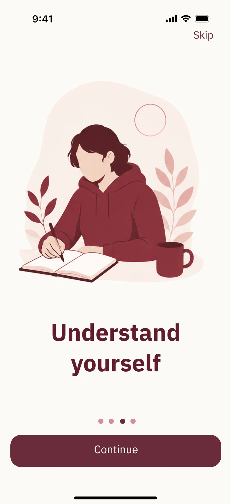
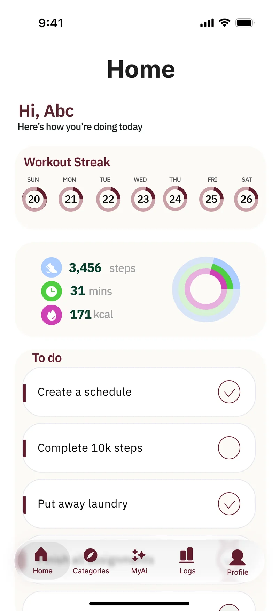
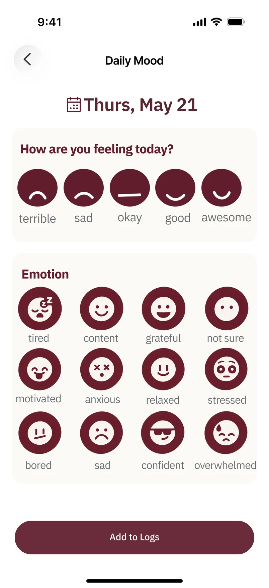
01 Problem
Wellbeing is spread across too many apps.
Young adults often manage fitness, sleep, mood, habits and mental wellbeing across separate apps, creating a fragmented experience that becomes difficult to maintain when life gets busy or stressful. Orivé explores how these parts of wellbeing can exist within one personal, supportive experience without making health tracking feel like another responsibility.
02 Research
Interviews, a survey and a competitive audit
I wrote a 14-question interview guide and a 15-question survey about routines, stress, support and app habits, then compared how Apple Health, Headspace and Reflectly cover different parts of wellbeing. I synthesised responses in an affinity map and empathy map.
“Too many notifications, gets annoying and I delete it.”
“Tracking everything becomes too much work and also using 4 different apps makes it feel repetitive.”
Interview responses from my research notes.
Feature
Apple Health
Headspace
Reflectly
Fitness tracking
Detailed activity, steps, heart rate
Basic movement tracking
None
Mental health support
Not available
Strong mindfulness and stress support
Emotion-focused reflection
AI support
Health-data recommendations
Limited guided suggestions
Responds to journal entries
Sleep support
Tracks sleep patterns
Sleep stories and audio
Not available
Professional support
No expert connection
Guided support, not therapy
No expert connection
Wellness scope
Physical and lifestyle
Mental and mindfulness
Emotional and journaling
Condensed from my 15-parameter competitive analysis.
03 Synthesis & pain points
The consistency gap
People want to be healthy but struggle to keep routines when workload and stress rise.
Too much effort
Existing apps need too much tracking, send too many notifications and lock features behind paywalls.
Fragmented tools
Fitness, sleep, mood and habits live in different apps, so nothing feels connected.
Careful trust in AI
Most are open to AI guidance, but accuracy, privacy and losing human support are real concerns.
04 Persona
Aanya is a persona built from the patterns in my interviews and survey, not a single participant.
AK
Aanya Kapoor
19 · Undergraduate · New Delhi Lives away from home during college
“I want to be healthier, but I can’t stay consistent.”
Between classes, assignments and friends, Aanya never has enough hours. In busy weeks she sacrifices sleep and skips workouts. She has tried wellness apps, but most need too much effort or cover only one part of health.
Goals
Build sustainable routines
Manage stress and sleep
Track progress without overwhelm
Frustrations
Stress disrupts routines
Apps feel repetitive or demanding
Guilt when falling behind
05 Problem definition
How might we bring fitness, mood, sleep, habits and support into one experience that stays easy to keep up with, even in stressful weeks?
06 User journey → product decisions
Mapping Aanya’s first week
Long questionnaires cause drop-offOne question per screen, a progress indicator and a skip option.
Users hesitate to share health dataPrivacy explained during setup, with controls in the profile.
Too many habits at once reduce motivationStart with one or two habits.
Emotional tracking feels like workQuick, emoji-based mood check-ins.
07 Information architecture & flows
From card sort to five tabs
A card-sorting exercise grouped every feature, then I condensed them into five predictable destinations, so many wellness functions live in places users can find without thinking.
View ↗← All workHackathon · Health in Climate AI · Climate Week NYC
CrewCares
CrewCares explores how environmental and health information could be made actionable for NYC subway workers and union stakeholders, connecting a worker-facing experience with a union dashboard. A prototype built at the Health in Climate AI hackathon.
CrewCares was built at the Health in Climate AI Hackathon during Climate Week NYC, with teammates from technical and research backgrounds and input from mentors across product, clinical and public health.
02 Problem
Subway workers don’t choose where they work.
Assignments come from a seniority-bidding system, so the environmental conditions of a station are never factored in. Workers spend hours in those conditions with little information about them.
03 Research & environmental evidence
What the underground can mean for health
We looked at the conditions that matter most underground: particulate matter, heat, humidity, flooding and ventilation, and what they could mean for people spending full shifts in them.
04 Data limitations
The data we needed didn’t exist.
There is no public per-station air-quality feed for the NYC subway. Instead, the team worked from available above-ground weather and air-quality readings and explored ways of estimating conditions underground.
05 Opportunity
Give workers information that makes sense for today’s shift, and give their union a clearer picture of where attention may be needed.
06 System architecture
One system. Two sides of the same problem.
Workers need environmental information that makes sense in the context of their shift. Union stakeholders need aggregated information that helps them identify where attention may be needed. CrewCares connects those perspectives without turning the worker experience into a complex dashboard.
Worker
On the phone
Understand conditions
Receive precautions
Report concerns
Shared data
Union
On the dashboard
See patterns
Identify stations needing attention
Turn reports into action
07 Worker experience
Guidance that fits the shift
I focused on turning the team’s research and environmental data into something a worker could act on in seconds: understand today’s conditions, get a precaution, and report a concern.
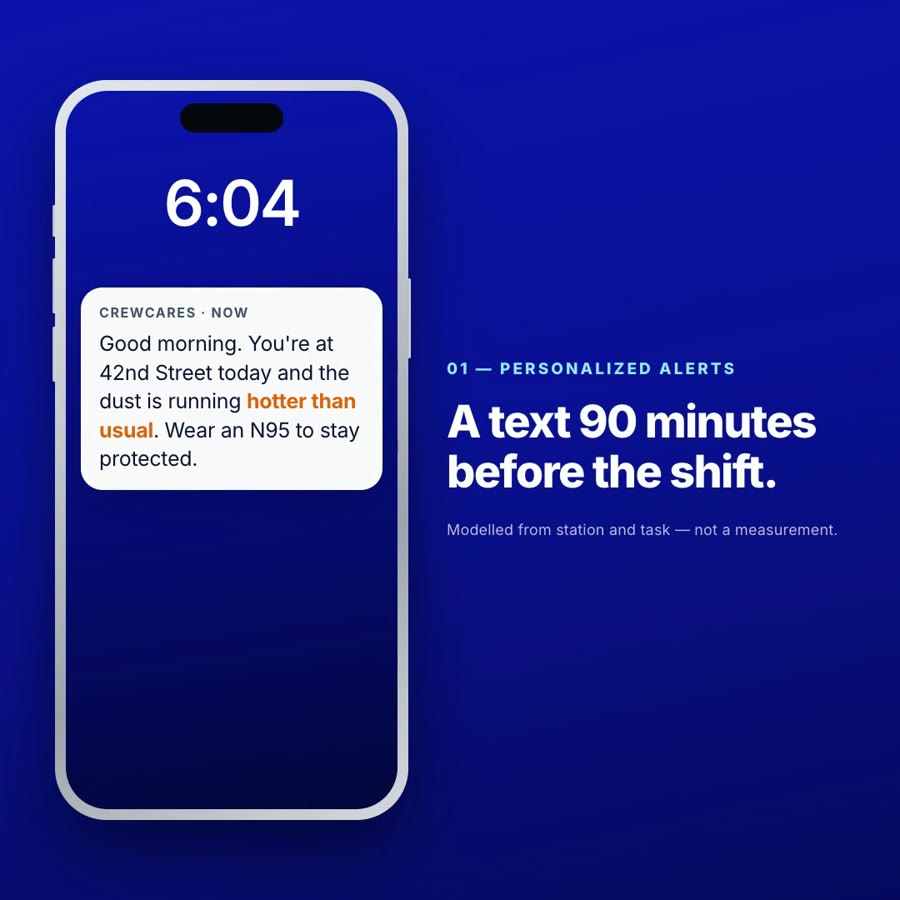
Before the shiftA text with today’s station, conditions and a precaution.
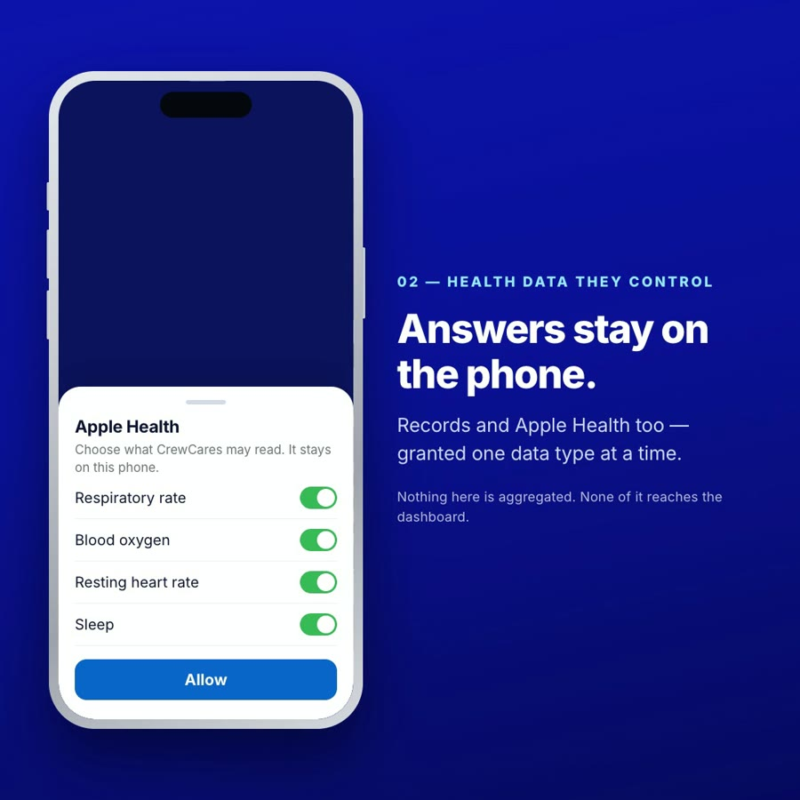
Their own healthOptional check-ins that stay on the worker’s phone.
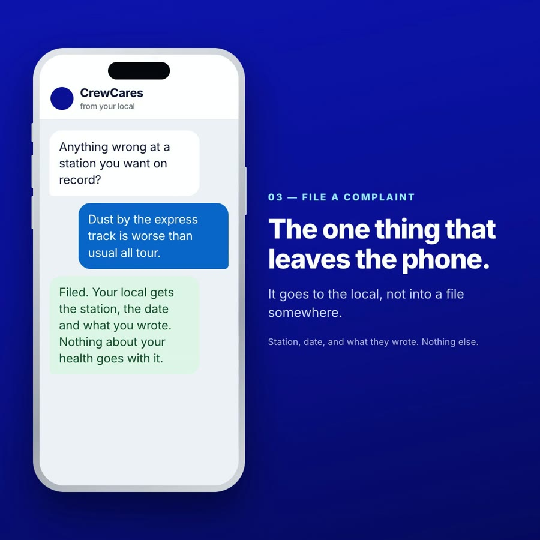
Report a concernOne sentence, sent to the union with station and date.
08 Union dashboard
Where attention may be needed
The union side translates environmental and worker-reported information into station-level insight: a live risk map, stations ranked for attention, and member reports grouped by issue.
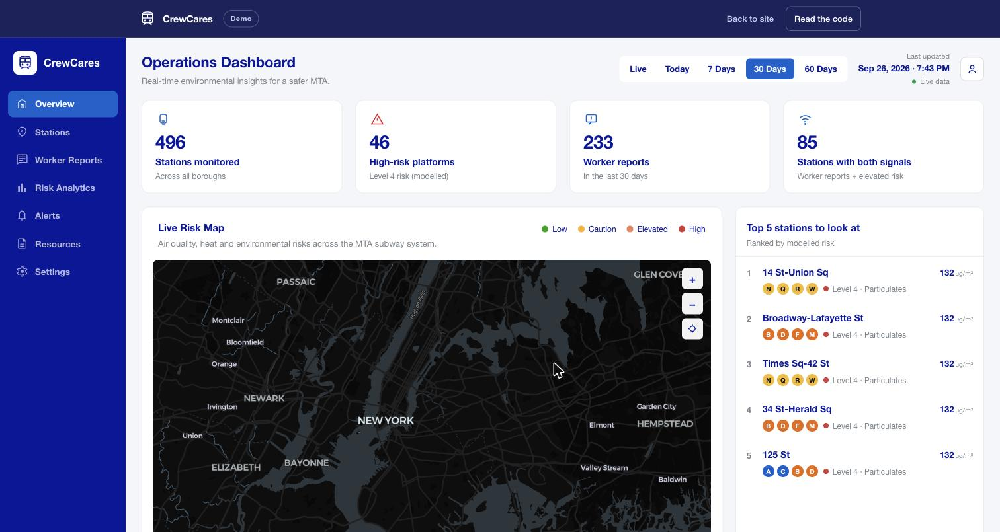
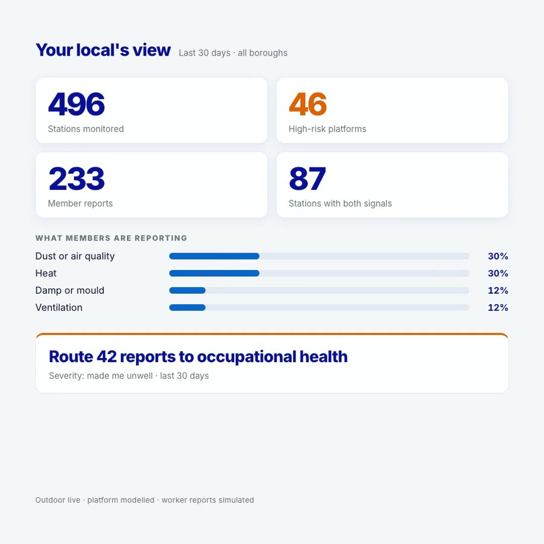
Figures from the working demo. Platform conditions are modelled and member reports are simulated.
09 How the data works
Measured, modelled and simulated
Measured / source
Inputs
Live outdoor weather and air-quality readings
NYC subway station list: structure type and routes served
Modelled / estimated
Platform conditions
Platform PM2.5, temperature and humidity
Flood and mould risk
A 1–5 risk level per station
Simulated
Demo reports
Worker complaints in the demo are a synthetic set, not real submissions
No official live MTA underground sensor data was used. Modelled figures show where to look first, not whether a station is safe.
10 Design decisions
Meet workers where they areThe worker side runs in a text thread. No app to install.
Instructions, not evidenceAlerts lead with what to do today, like wearing an N95.
Separate health from reportsHealth answers stay on the phone. A complaint carries only station, date and the worker’s words.
Label every estimateModelled and simulated figures are marked wherever they appear.
This project changed how I think about designing with data. I entered the weekend most comfortable with UX and interface design, but working with teammates across technical and research backgrounds taught me how design can become the bridge between complex information and the people who need to act on it.
We didn’t get the outcome we hoped for, but I left with a new way of approaching problems and more confidence working in rooms where I’m not the expert.
Independent student prototype, not affiliated with the MTA. Created during the Health in Climate AI hackathon.
A small web experiment: ask a question, choose your mood and draw a card. The reading combines a card pulled from a tarot API with a message written for how you feel.
Tarot is a ritual of asking. I wanted to see how a simple interface could turn a random draw into a moment that feels personal, by letting the user’s mood shape the tone of the reading.
02 Interaction
Ask a question→Choose a mood→Draw my card→Card + meaning + reading
Five moods: confused, anxious, hopeful, stuck and excited. Everything happens on one screen.
03 How it works
RequestOn click, the script calls the tarot API with fetch.
DrawIt picks one random card from the deck it returns.
MeaningIt shows the card’s upright meaning from the API.
MoodIt adds a short reading I wrote for the selected mood.
04 Visual & interaction system
A frosted-glass card floats on a deep purple gradient, with a classic serif for a slightly mystical, bookish feel. The button lifts and brightens on hover.
#44205E#7B5B96#B28BCC#F0D7F8
05 Technical exploration 06 Final experience
Try it here
AI Tarot Reader
Ask a question, choose your mood, and let the card guide you.
<!DOCTYPE html>
<html lang="en">
<head>
<meta charset="UTF-8">
<meta name="viewport" content="width=device-width, initial-scale=1.0">
<title>AI Tarot Reader</title>
<link rel="stylesheet" href="style.css">
</head>
<body>
<div class="card">
<h1>AI Tarot Reader</h1>
<p>
Ask a question, choose your mood, and let the card guide you.
</p>
<input
id="questionInput"
type="text"
placeholder="What are you wondering about?"
>
<select id="moodInput">
<option value="confused">Confused</option>
<option value="anxious">Anxious</option>
<option value="hopeful">Hopeful</option>
<option value="stuck">Stuck</option>
<option value="excited">Excited</option>
</select>
<button type="button" id="drawBtn">
Draw My Card
</button>
<div id="result"></div>
</div>
<script src="script.js"></script>
</body>
</html>
const drawBtn = document.getElementById("drawBtn");
const result = document.getElementById("result");
drawBtn.addEventListener("click", drawCard);
async function drawCard(){
const question =
document.getElementById("questionInput").value;
const mood =
document.getElementById("moodInput").value;
const response =
await fetch("https://tarotapi.dev/api/v1/cards");
const data = await response.json();
const cards = data.cards;
const randomCard =
cards[Math.floor(Math.random() * cards.length)];
let message = "";
if(mood === "anxious"){
message =
"You may be overthinking the unknown right now. Trust that clarity will come.";
}
else if(mood === "hopeful"){
message =
"This card reflects growth, softness, and possibility entering your life.";
}
else if(mood === "stuck"){
message =
"A shift in perspective may help you move forward.";
}
else if(mood === "excited"){
message =
"Follow your excitement, but remember to stay grounded.";
}
else{
message =
"Not every answer appears immediately. Sit with uncertainty.";
}
result.style.display = "block";
result.innerHTML = `
<h2>${randomCard.name}</h2>
<p>
<strong>Your Question:</strong>
${question}
</p>
<p>
<strong>Card Meaning:</strong>
${randomCard.meaning_up}
</p>
<p>
<strong>Your Reading:</strong>
${message}
</p>
`;
}
Building the Tarot Reader introduced me to working with live external data and dynamically translating it into an interactive experience. Using JavaScript, fetch and async/await, I learned how information from an API could become part of the interface rather than static content.
The project also made me think about the difference between retrieving information and interpreting it. A future exploration would be using a language model to respond to the question itself, which the current version does not do.
← All workProjection-mapped installation · Environments
Before It Makes Sense
A fragmented environment that only becomes understandable when you change how you look at it.
Medium
Unity and projection mapping using MadMapper
Discipline
Interaction Design · Experience Design
Year
2026
Role
Solo project
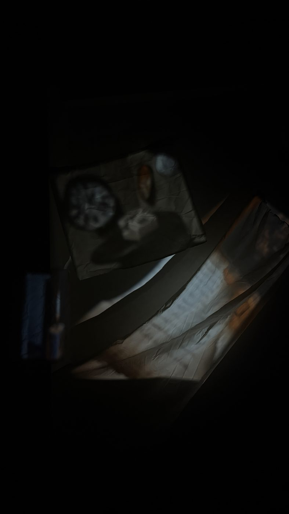
01 Concept
The environment stays the same. Perception changes.
This projection-mapped installation explores the uncertainty of being inside a transition before you can understand what it means. It grew from my experience of changing academic directions, when something I had planned around suddenly stopped making sense. Rather than representing that experience literally, I translated the feeling of uncertainty into an environment that could only be understood gradually.
Built in Unity and projected across suspended fabric and paper, the installation breaks a single environment into disconnected visual fragments. From one position, viewers encounter partial images that feel unrelated and incomplete. As they physically move through the space, those fragments begin to overlap, align, and reveal that they have been looking at different pieces of the same environment all along.
The environment itself never changes. What changes is the viewer’s position, context, and understanding.
Nothing in the environment changes. Only the viewer’s perspective does.
02 Experimentation
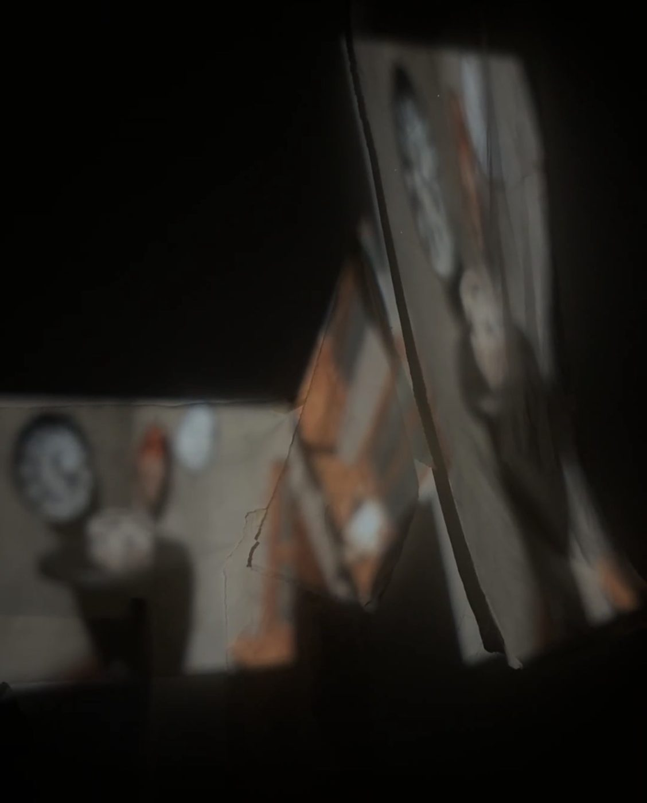
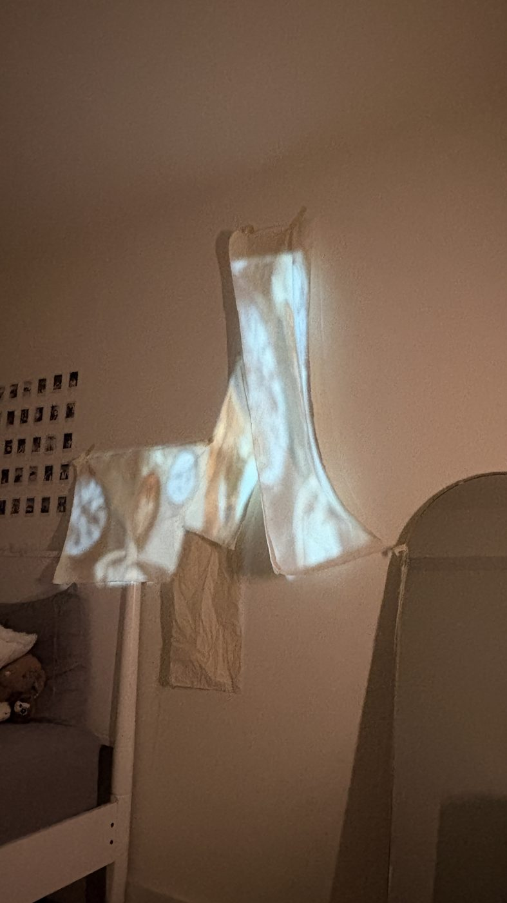
Fabric and paper catch the projections unevenly, so each surface shows only part of the image.
03 Fragments → the whole
Stills from the installation film, in order: fragment, then fragment, then more context, until the room comes together.
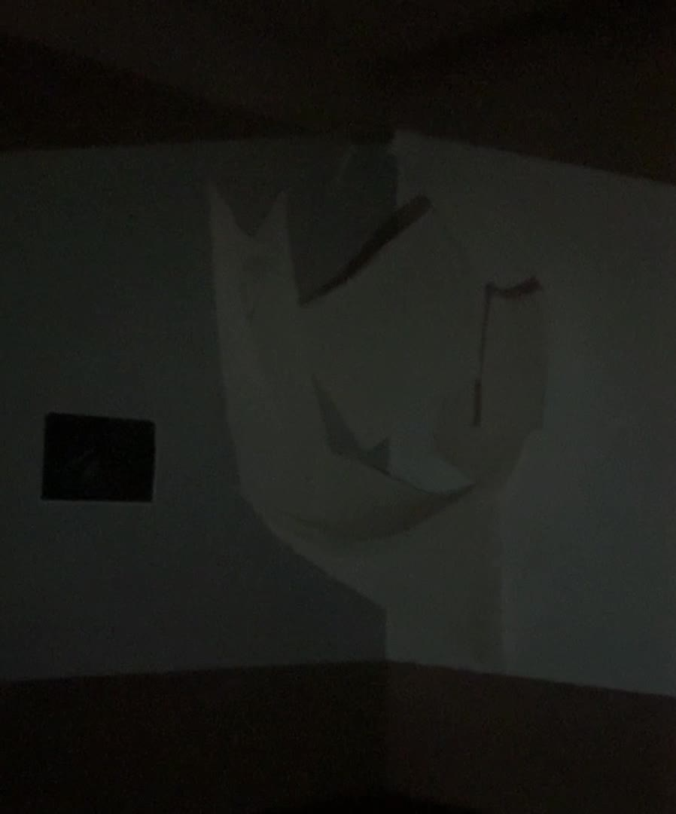
0:01
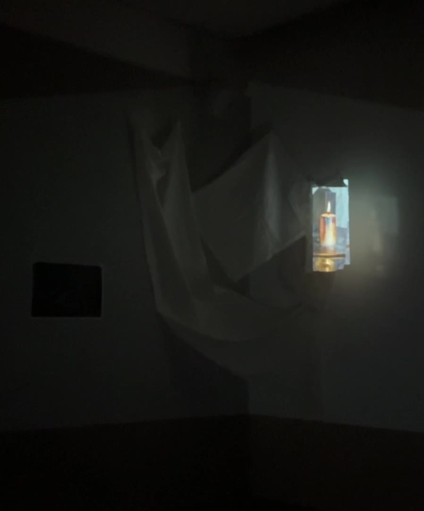
0:07
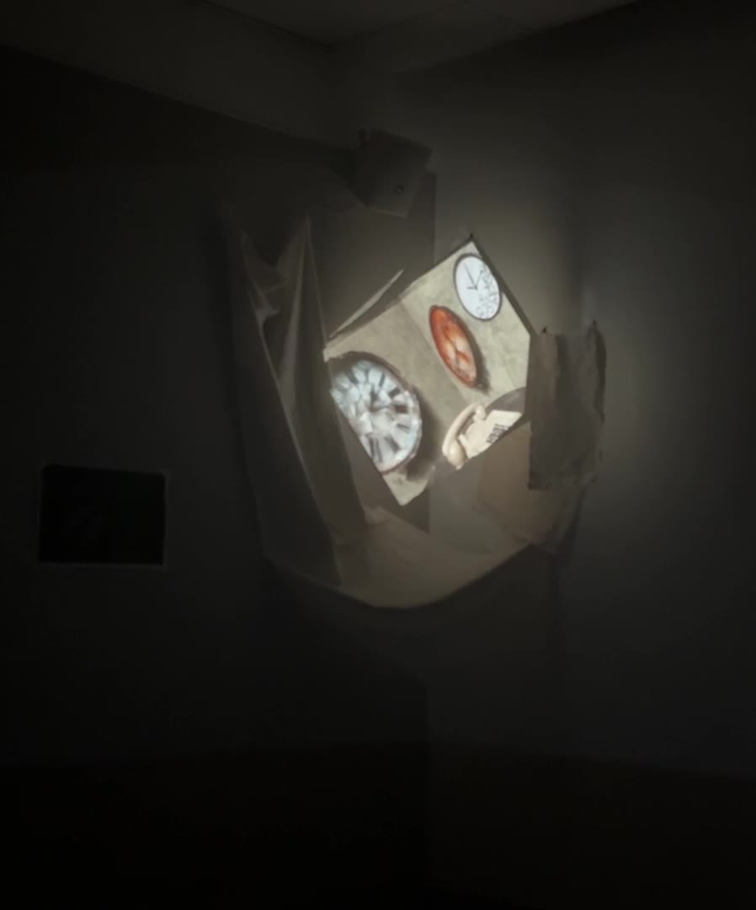
0:10
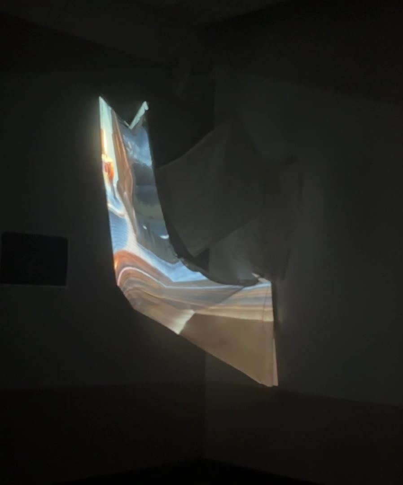
0:26
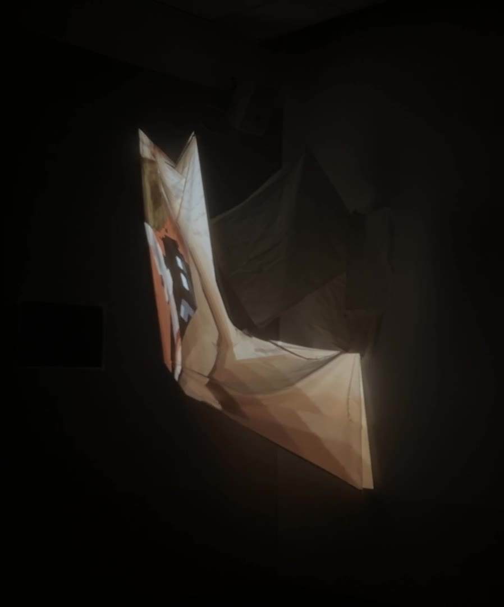
0:49
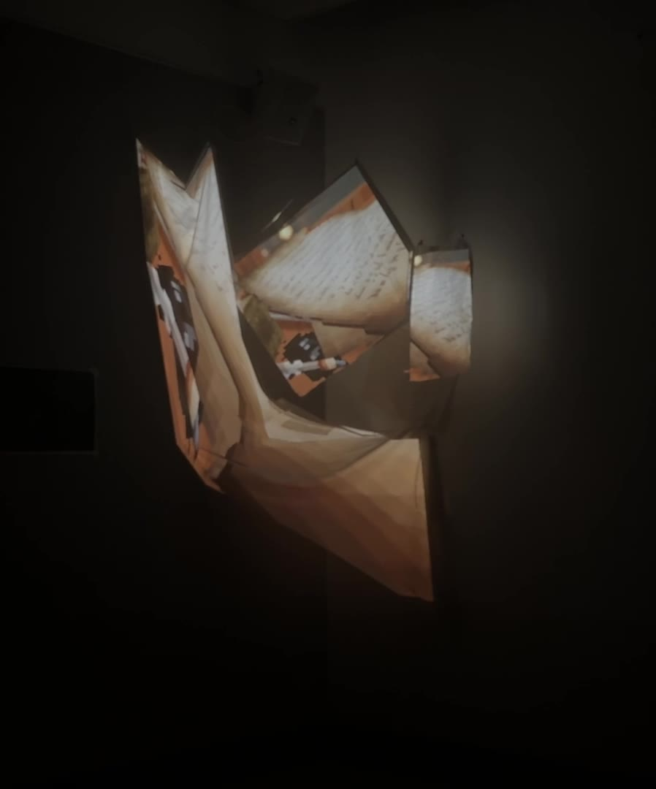
1:16
Installation film, 1:18.
04 Reflection
The project is about the period before something makes sense: when individual moments can feel disconnected or even like failure, but gain meaning once they are seen as part of a larger picture.